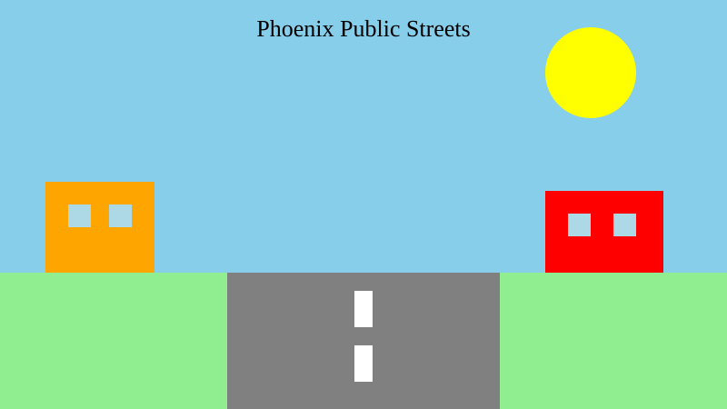
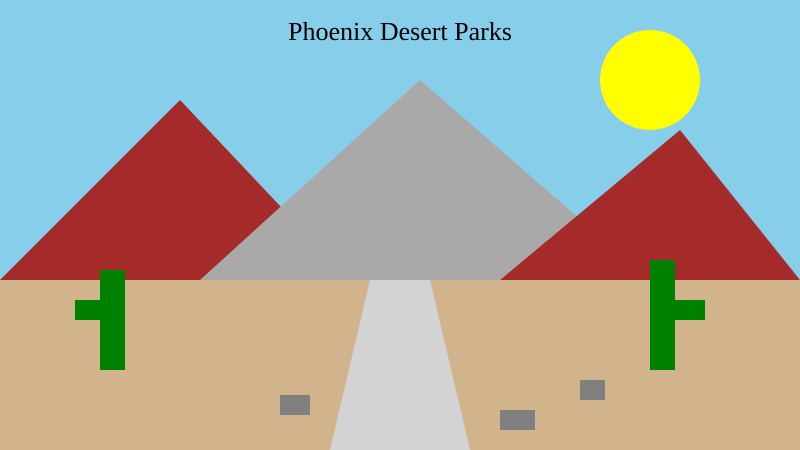

D1 · Story Frame
Develop the story context and include a concise methods/source note.
D2 · Editorial Figures


D3 · Accessible Data Table
| Category | Amount | Unit | What it describes |
|---|---|---|---|
| Population | 1.6+ | Million people | People living in Phoenix |
| Yearly budget | 3.4 | Billion dollars | City yearly budget |
| Public schools | 325 | Schools | Public schools in Phoenix |
| Public streets | 4,850 | Miles | Public street network |
| Desert parks | 41,000 | Acres | Desert parks and mountains |
| Trails | 200+ | Miles | City trails |
| Golf courses | 8 | Courses | Golf courses listed by the city |
Methods/source: The information comes from the City of Phoenix Facts and Statistics page. Data comes from the City of Phoenix. The source used phases like more than and over so I made it simpler and used + in the graphics to make the numbers easier to read.
D4 · Responsive SVG
Source: City of Phoenix Facts and Statistics.
D5-D6 · System and Documentation
Extend Module 1 patterns, then link your sources, asset credits/licenses, test record, transformation notes, and AI disclosure.